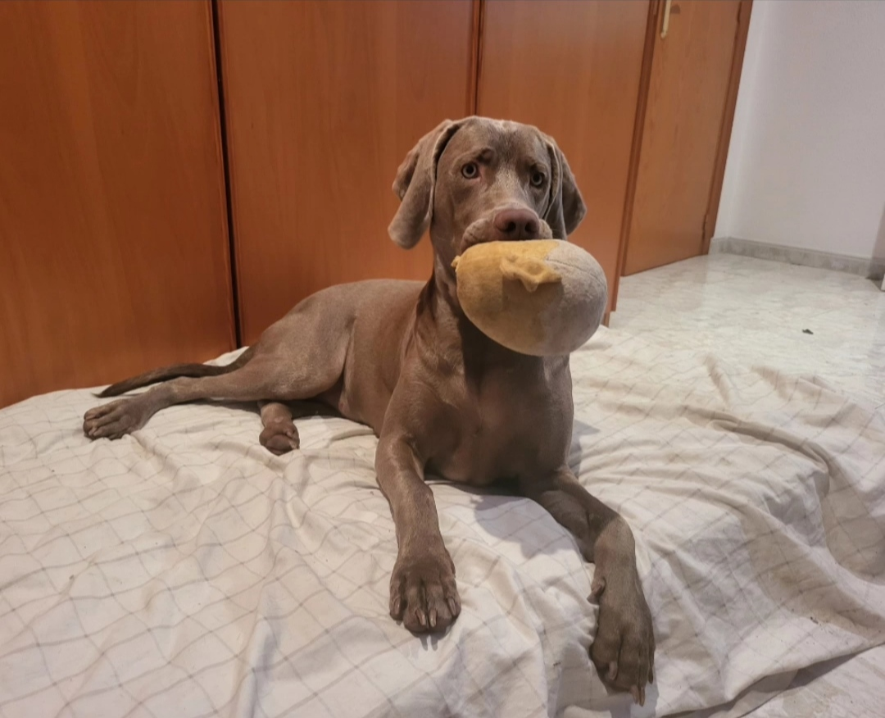
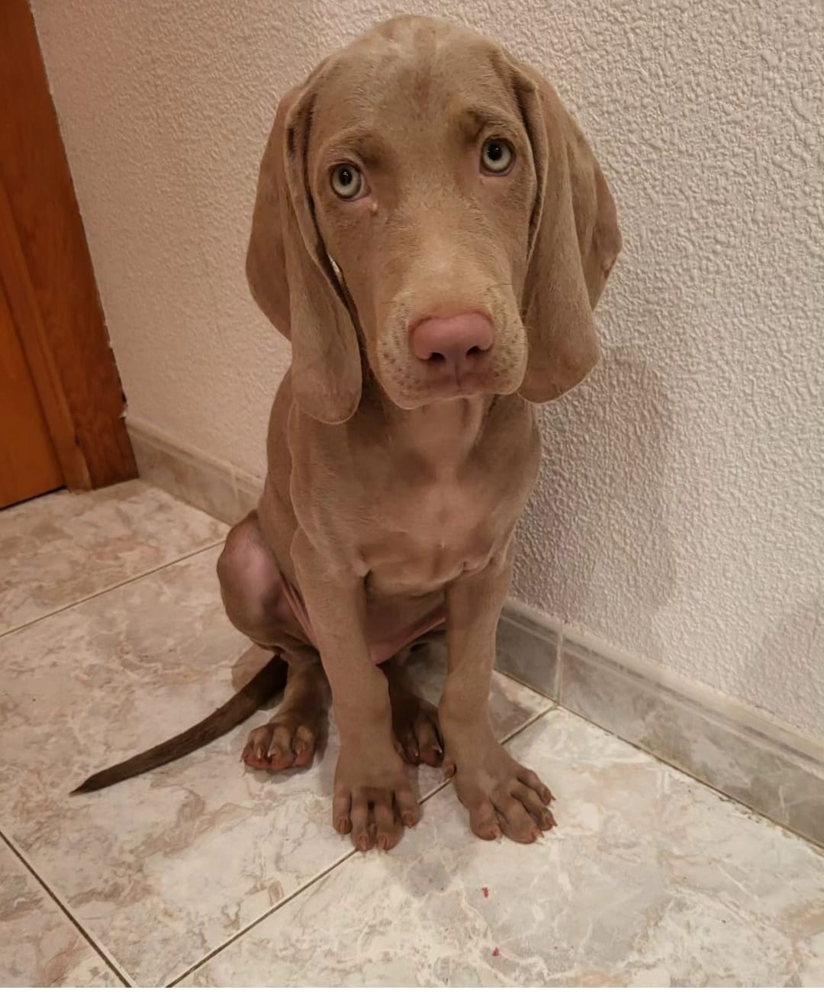

La raça brac de Weimar
L'Aloy és una gossa de raça brac de Weimar, també coneguda com a Weimaraner. Aquesta raça és originària d'Alemanya.
Els bracs de Weimar destaquen pel seu pelatge gris platejat, la seva elegància i el seu caràcter actiu i intel·ligent.

Curiositats sobre l'Aloy
Passa el ratolí per sobre del requadre següent per descobrir una curiositat.
Descobreix una curiositat!
Passa el ratolí per aquí.
Els bracs de Weimar són gossos molt enèrgics, intel·ligents i afectuosos. Necessiten exercici i els agrada estar acompanyats.
L'Aloy quan era petita
Aquí podem veure l'Aloy quan era una cadella. Amb el temps ha crescut, però continua sent una gossa molt especial.

Formulari de contrasenya
Introdueix una contrasenya dues vegades. Ha de tenir com a mínim 8 caràcters i les dues contrasenyes han de coincidir.